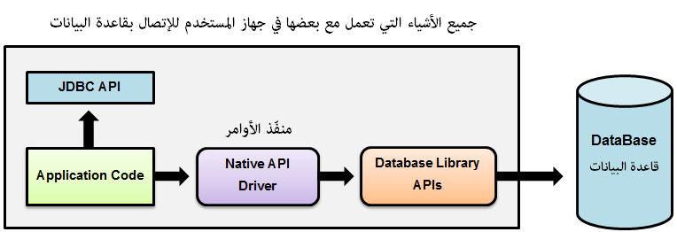

Javaأنواع الـ Drivers التي يمكن إستخدامها للإتصال بقواعد البيانات
مقدمة
للتعامل مع قواعد البيانات تحتاج برنامج وسيط يربط برنامجك بقاعدة البيانات, هذا البرنامج يسمى Driver.
هناك أربعة أنواع من الـ Drivers التي يمكن استخدامها لربط البرنامج مع قواعد البيانات:
JDBC-ODBC Bridge Driver.
Native-API Driver.
Network Protocol Driver.
Thin Driver.
JDBC-ODBC Bridge Driver
طريقة عمله
الـ JDBC-ODBC Bridge Driver يقوم بتحويل أوامر JDBC API إلى أوامر يفهمها الـ ODBC Driver و الذي بدوره يقوم بربط البرنامج بقاعدة البيانات.
فوائده
مساوئه
أدائه يعتبر ضعيف (بطيئ) حيث أنه يقوم بتحويل أوامر الـ JDBC إلى أوامر ODBC في كل عملية يتم إجراءها مع قاعدة البيانات.
يجب تنصيب الـ ODBC Driver في جهاز المستخدم.
كود الـ API مكتوب بلغة C و C++ و ليس بلغة جافا.
Native-API Driver
طريقة عمله
الـ Native-API Driver يعني إعتماد أوامر الـ API الملائمة لقاعدة البيانات التي سيتم التعامل معها بشكل مباشر.

فائدته
مساوئه
يجب تنصيب الـ Native Driver في جهاز المستخدم.
يجب إستخدام API خاص لأي قاعدة بيانات سيتم التعامل معها في جهاز المستخدم.
كود الـ API مكتوب بلغة C و C++ و ليس بلغة جافا.
Network Protocol Driver
طريقة عمله
الـ Network Protocol Driver يقوم بإرسال أوامر JDBC API من جهاز المستخدم إلى خادم, و الذي بدوره يقوم بتنفيذ أوامر البرنامج في قاعدة البيانات مباشرةً أو إرسالها إلى خادم آخر.
فوائده
لا حاجة إلى تنصيب أي برنامج من ناحية المستخدم.
لا حاجة إلى إستخدام APIخاص لقاعدة البيانات التي سيتم التعامل معها.
الكود كله مكتوب بلغة جافا.
مساوئه
يجب إتصال المستخدم بشكبة النت للوصول إلى قاعدة البيانات.
تجهيز الخادم لربط المستخدم بقاعدة البيانات أمر يتطلب بعض الجهد.
أي تعديل من ناحية برنامج المستخدم للتعامل مع قاعدة البيانات, سيجبرك على تعديل الكود الموضوع في الخادم.
Thin Driver
طريقة عمله
الـ Thin Driver يقوم بتحويل أوامر JDBC API مباشرةً إلى أوامر يفهمها الـ API الخاص بقواعد البيانات.
فوائده
أدائه أفضل من أداء جميع الـ Drivers الذين ذكرناهم سابقاً.
لا حاجة إلى تنصيب أي برنامج من ناحية المستخدم أو الخادم.
الكود كله مكتوب بلغة جافا.
مساوئه
ما هو الـ driver المناسب للإتصال بقواعد البيانات؟
إذا كنت ستربط برنامجك بنوع واحد من قواعد البيانات ( مثل Oracle, MySQL, Sybase, IBM إلخ.. ), إستخدم الـ Thin Driver.
إذا كنت ستربط برنامجك بعدة أنواع من قواعد البيانات, إستخدم الـ Network Protocol Driver.
إستخدم الـ Native API Driver لربط برنامجك بقواعد البيانات في حال لم تقم بتجهيز Thin Driver أو Network Protocol Driver بعد.
لا تستخدم الـ JDBC-ODBC Bridge Driver إطلاقاً في برامجك.

 محرر الويب
محرر الويب نظام الألوان
نظام الألوان محول الوحدات
محول الوحدات محلل عناوين الشبكات
محلل عناوين الشبكات